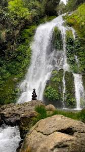
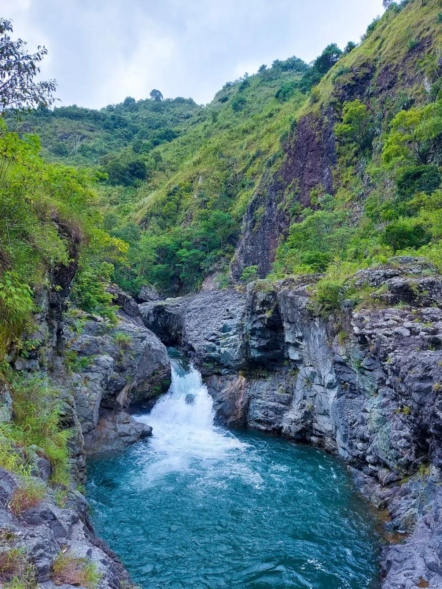

Besao has stunning sunsets, it would make for a great side trip to visit Besao and enjoy its sunsets.
Kabuyao Rice Terraces is located in Payeo, Besao, Mountain Province, less than two kilometers from the Municipal Hall and center of the town.
Bidbidowen Falls Besao, Mountain Province
It is a small lake surrounded by pine trees with a relaxing atmosphere and a nice sunset.
Layugan River so called the “river of life” is located at Tamboan, Besao, Mountain Province.
Tagpeo falls is located at the Besao in Mountain Province, It cascades on a massive rock cliff to a small and shallow catch basin below.